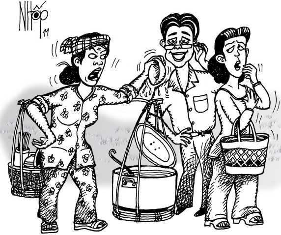

Hai mươi hai tuổi, tôi về Bạc Liêu dạy học. Nhiều em học sinh lớp đệ nhất chỉ thua thầy vài ba tuổi, coi tôi như người anh cả, thân ái đặt cho tôi ngoại hiệu Tùng Xua tùa hia (tiếng Triều Châu - Đường Sơn đại huynh). Một sáng tháng 10-1971, Tùng Xua tùa hia Vũ Đức Sao Biển đang ăn sáng trong tiệm Xừng Ký ngoài chợ Bạc Liêu thì chứng kiến một vụ việc ngộ nghĩnh.
Như thường lệ, khoảng 6 giờ sáng, chị Thạch Thị Rươl - một người phụ nữ Khmer cư ngụ trên đường Đống Đa, gánh cái gánh bún nước lèo danh tiếng của mình ra chợ Bạc Liêu bán. Mấy bà, mấy chị đi chợ Bạc Liêu rất mê tín món bún nước lèo của chị Rươl. Nồi nước luôn luôn sôi bốc lên mùi mắm thơm phức; tôm, thịt quay, cá lóc, rau xanh... tươi ngon hơn các gánh bún nước lèo của người khác. Giá của tô bún chỉ cỡ 5 đồng (giá lít xăng ngày ấy là 12 đồng) nên rất vừa túi tiền của khách hàng. Mới nghĩ đến tô bún của chị Rươl, ai nấy cũng muốn... chảy nước miếng.
Hôm ấy, chị vợ của một anh lính thuộc trung đoàn 32, sư đoàn 21 (chế độ cũ), nhà trong khu gia binh Lê Văn Lưỡng đi chợ sớm. Thấy chị Rươl gánh bún nước lèo tới, mới mở vung ra đã bay mùi thơm phức, chị vợ lính có nhã ý... ăn mở hàng. Chị cúi người xuống nhìn vào nồi nước lèo, gọi một tô bún.
Trời xui đất khiến làm sao hôm ấy chị ta mặc áo hở cổ, mà mối chỉ may của chiếc nịt ngực cũng đến hồi quá date. Cái thế cúi người đột ngột khiến sợi chỉ cuối cùng đứt luôn. Tõm một cái, một miếng mousse độn áo ngực của chị, tục gọi là vú giả, rơi ngay vào nồi nước lèo thơm phức của chị Rươl.
Chị Rươl túm lấy bà khách mở hàng hậu đậu, la bài hãi: “Trời ơi! Gánh bún tui chưa bán mở hàng mà bà làm... rớt vú vào đó. Giờ tui bán cho ai?” Tiếng la của chị khiến cả đầu chợ cuối chợ đều nghe, không chừng trong xóm... chùa Cô Bảy cũng nghe được. Chị buộc bà khách phải đền tiền nguyên gánh bún 120 đồng. Bà khách vừa xấu hổ sượng sùng, vừa lo số tiền không đủ, lên tiếng phân bua.
Sợ họ đánh nhau, mấy bà mấy chị trong chợ chỉ họ qua bên... Hội đồng xã Vĩnh Lợi cho mấy ông bên bển phân xử. Chị Rươl vai gánh gánh bún, tay trái nắm tay bà khách, dẫn qua hội đồng, cách chợ Bạc Liêu khoảng trăm mét.
Chủ tịch hội đồng xã kiêm trưởng ban tư pháp xã Vĩnh Lợi lúc bấy giờ là ông TVV Ông mời hai phụ nữ ngồi để nghe họ “tường trình ủy khúc” - chữ dùng thời chế độ cũ. “Nguyên đơn” Rươl giành nói trước, rằng nồi nước lèo và gánh bún của chị nói chung giá 120 đồng. Nay, bà khách làm rớt... vú giả vào đó, không còn ai dám ăn uống gì nữa. Vậy bà khách phải đền cho chị 120 đồng; những món tôm, thịt, rau, bún cứ mang về mà... ăn cho phỉ.

.Chị cũng ca cẩm rằng việc rớt vú giả vào nồi nước lèo làm gánh bún danh tiếng của chị bị xúi quẩy; sợ khách hàng sau này không dám ăn, ảnh hưởng đến uy tín “thương hiệu” của chị.
“Bị đơn” mặt tái mét, sượng sùng trình bày rằng chị ăn bún nước lèo của chị Rươl nhiều lần, thấy ngon nên định ăn mở hàng nhưng không ngờ “nó” rớt. Chị đi chợ, chỉ đem theo mấy chục đồng, thật sự không đến nổi 120 đồng. Vả chăng theo chị, vú giả chỉ rớt vào nồi nước lèo nên chất lượng mấy món tôm, thịt không ảnh hưởng gì. Chị Rươl buộc chị mang về ăn cho phỉ, chắc chị ăn không nổi, mà có rủ mấy bà vợ lính khác qua ăn thì chắc chi họ... chịu ăn.
Ông V thực sự bối rối. Ông nói: “Thôi được, hai chị ngồi chờ mấy phút”. Rồi ông đạp xe, chạy qua Tòa án tỉnh Bạc Liêu cách đó khoảng vài trăm mét, “thỉnh giáo” lục sự TCH. Ông H là người gốc Triều Châu, làm lục sự nhiều năm, có nhiều kinh nghiệm giải quyết và hòa giải những tranh chấp dân sự. Ông H cố vấn cho ông V: Phần nào thật sự bị hư hao thì đến phần đó, có tính toán để châm chước gia giảm những thiệt hại khác do “sự cố” này gây ra.
Ông V quay về Hội đồng xã, xử như vầy: Chị vợ lính làm rơi vú giả làm hư nồi nước lèo, phải đền 30 đồng. Vụ việc đáng tiếc đó cũng gây ra những thiệt hại “thương hiệu” cho gánh bún mắm nước lèo nổi tiếng của chị Rươl nên phải đền thêm 20 đồng nữa. Riêng các phần thịt, cá, tôm, rau của chị Rươl không ảnh hưởng gì nên cũng không thiệt hại gì, chị Rươl không nên buộc chị vợ lính phải đền bù. Ông cũng động viên chị Rươl về nấu... nồi nước lèo khác, bán qua trưa và chiều để khỏi thiệt hại thu nhập trong ngày.
Án được thi hành tại chỗ. Chị vợ lính đền tiền ngay. Mười giờ trưa hôm ấy, chị Rươl lại gánh gánh bún nước lèo ra chợ Bạc Liêu. Buổi trưa, người ta ăn cơm quán Xừng Ký chứ ít ai chịu ăn bún mắm. Tuy nhiên, mấy bà mấy chị trong chợ cũng ăn ủng hộ chị Rươl bởi theo chị quảng cáo: “Mới nấu lại nồi nước lèo khác, toàn mắm sặt rằn với mắm lóc, ngon lắm”. Mấy người phụ nữ vừa ăn vừa bụm miệng cười.
Chị Rươl cũng không quên làm một thủ tục xả xui phục hồi uy tín “thương hiệu” Chị cầm hai tờ giấy báo cháy phừng phừng, nhảy qua nhảy lại trên cái đòn gánh để... đốt phong long.